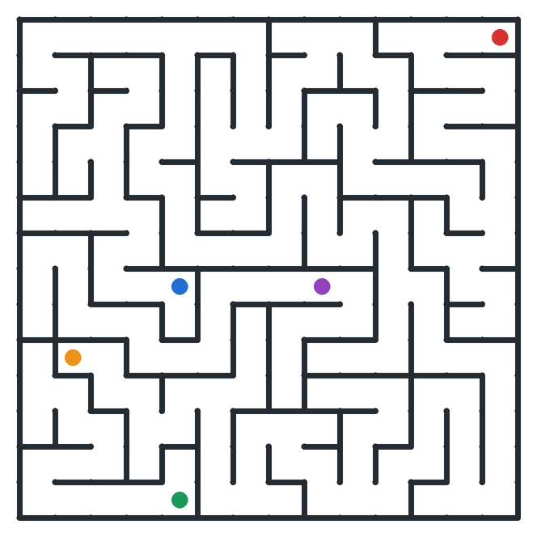
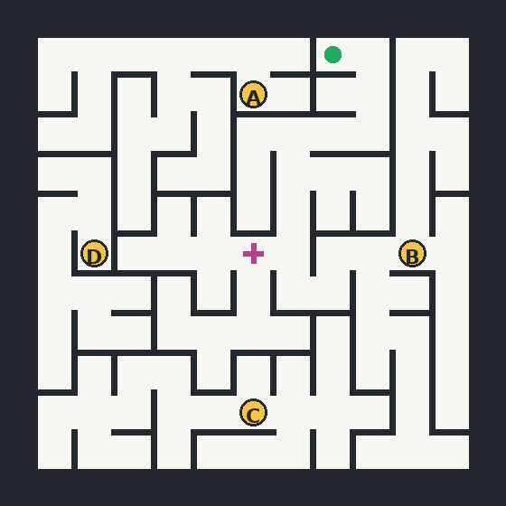
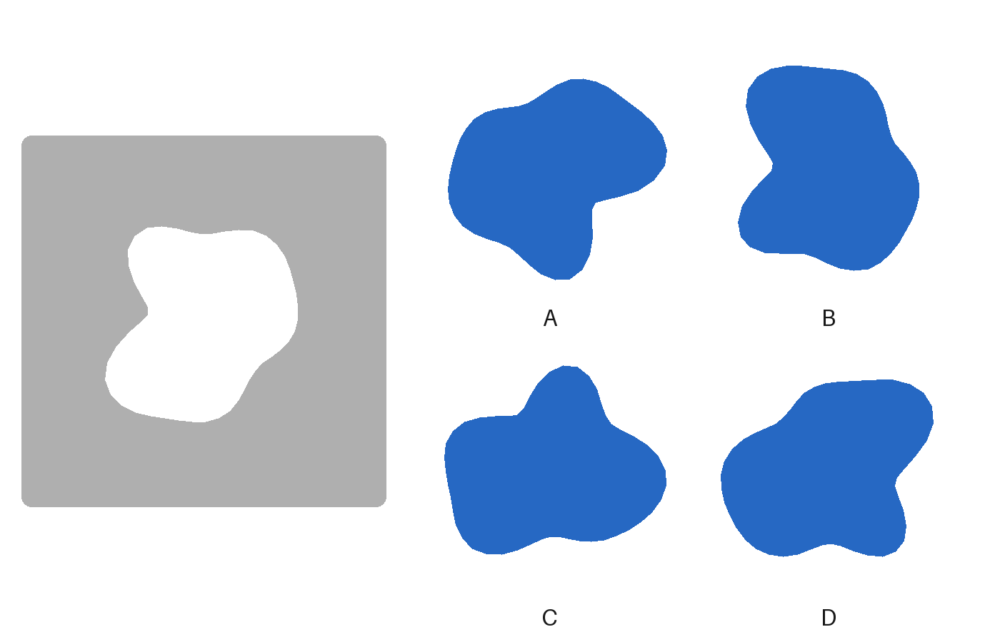

1 · Tracing
Which colored dot can be reached from the red dot without crossing a wall?
Show the answers
Recorded answer: orange
GPT-6.1 Sol (medium reasoning) answered: blue
Each question below is one sentence, and each image is one that at least one frontier vision-language model answered wrongly. Try them before opening the answers.
These are development samples generated after submission, chosen because the model missed them; they are not a benchmark and we report no accuracy. Each world passed the same automatic forward–inverse check as the worlds in the paper; none has been through human review.

1 · Tracing
Recorded answer: orange
GPT-6.1 Sol (medium reasoning) answered: blue

2 · Tracing and rotation
Recorded answer: C
GPT-5.6 Sol (high reasoning) answered: A
Opus 5 (high reasoning) answered: D

3 · Shape matching
Recorded answer: A
GPT-6.1 Sol (medium reasoning) answered: D